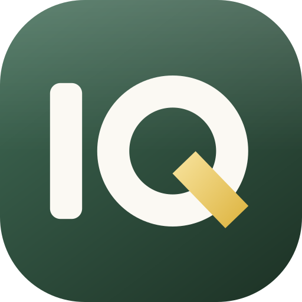
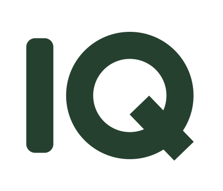

Brand guide
ResearchIQ
A quiet reading room for research. The mark is a bold IQ monogram on a deep moss tile, with the Q's tail struck in gold, the same gold used for citations in the product.
Logo
Primary lockup, on light
On dark

Icon, for app icons, avatars and favicons

One-colour monogram (print, stamps, emboss)
Monogram for dark backgrounds
Colour
Moss#33503F
Moss lift#406A55
Moss deep#1E3427
Cream#FBF9F3
Marker gold#F0CF72
Ink#25231F
The tile gradient runs from Moss lift (top left) to Moss deep (bottom right), with a soft white sheen over the top half. The Q's tail is a gold gradient from #F7E29B to #E0B94A.
Type
The wordmark is set in Newsreader Medium, with IQ in italic and the accent colour. UI text uses Geist.
Usage
- Keep clear space around the mark equal to the width of the Q's tail.
- Minimum icon size is 16px. It stays legible there; below that, use the text name.
- Use the icon alone where the wordmark would be redundant (favicons, avatars, the collapsed sidebar).
- Do not recolour the tile, stretch the mark, or move the gold off the Q's tail.
- On photographs or busy backgrounds, use the icon with its tile rather than the bare monogram.
Files
| File | Use |
|---|---|
researchiq-icon.svg | Icon on its tile (also favicon.svg) |
researchiq-logo.svg | Horizontal lockup on light |
researchiq-dark.svg | Horizontal lockup on dark |
researchiq-mono.svg | One-colour monogram, no tile |
researchiq-white.svg | Cream and gold monogram for dark backgrounds |
researchiq-wordmark.svg | Wordmark alone |
researchiq-icon-gradient.svg, researchiq-logo-gradient.svg | Same artwork as the icon and logo (kept for older links) |
png/ | Icon at 16–1024px, favicon.ico, apple-touch-icon.png, and the lockup at 256/512/1024px |
The in-app mark lives in src/components/shared/Logo.jsx. Keep it in sync with these files.